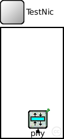
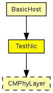
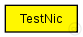

This documentation is released under the Creative Commons license
This documentation is released under the Creative Commons license(no description)
The following diagram shows usage relationships between types. Unresolved types are missing from the diagram. Click here to see the full picture.
The following diagram shows inheritance relationships for this type. Unresolved types are missing from the diagram. Click here to see the full picture.
If a module type shows up more than once, that means it has been defined in more than one NED file.
| BasicHost (compound module) |
The BasicHost is a compound module that implements a very simple host. It only consists of basic modules and is the most basic host you can create for the MF |
| Name | Type | Default value | Description |
|---|---|---|---|
| connectionManagerName | string |
name of the ConnectionManager module |
|
| phyLayerType | string |
type of the physical layer |
| Name | Value | Description |
|---|---|---|
| display | bgb=101,180,white,,;bgp=10,10 |
| Name | Direction | Size | Description |
|---|---|---|---|
| radioIn | input |
radioIn gate for sendDirect |
| Name | Type | Default value | Description |
|---|---|---|---|
| phy.usePropagationDelay | bool |
module TestNic { parameters: string connectionManagerName; //name of the ConnectionManager module string phyLayerType; //type of the physical layer @display("bgb=101,180,white,,;bgp=10,10"); gates: input radioIn; // radioIn gate for sendDirect submodules: phy: <phyLayerType> like CMPhyLayer { parameters: @display("p=60,150;i=prot3"); } connections: radioIn --> phy.radioIn; }
This documentation is released under the Creative Commons license